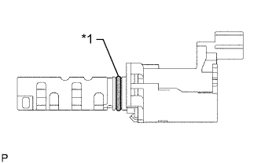

ГИДРАВЛИЧЕСКИЙ КЛАПАН ИЗМЕНЕНИЯ ФАЗ > УСТАНОВКА |
| 1. УСТАНОВИТЕ ГИДРАВЛИЧЕСКИЙ КЛАПАН ИЗМЕНЕНИЯ ФАЗ В СБОРЕ |
|  |
Установите на гидравлический клапан изменения фаз новое кольцевое уплотнение.
| *1 | Новое кольцевое уплотнение |
Нанесите на уплотнительное кольцо тонкий слой моторного масла.
Установите гидравлический клапан изменения фаз и закрепите его болтом.
Подсоедините разъем гидравлического клапана изменения фаз.
Установите кронштейн зажима жгута проводов и закрепите его болтом.
Установите 2 зажима и подсоедините 2 разъема.